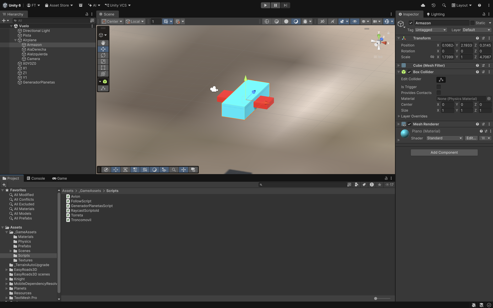
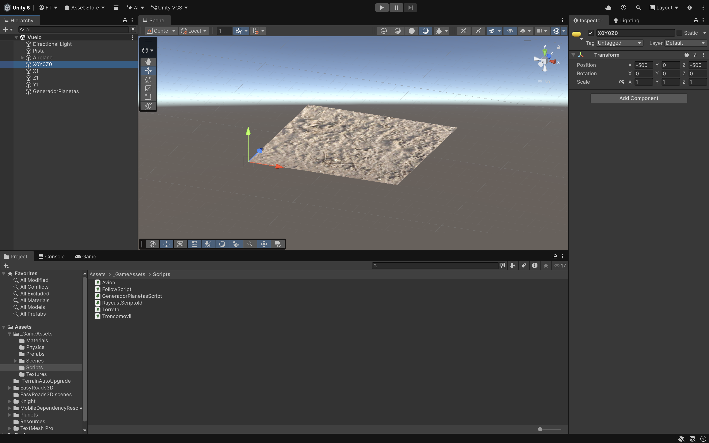
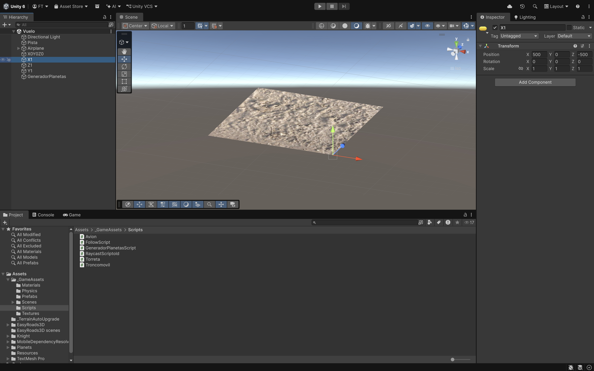
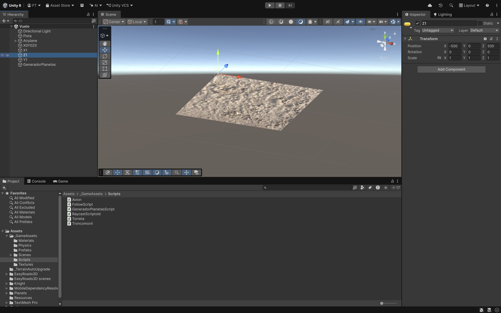
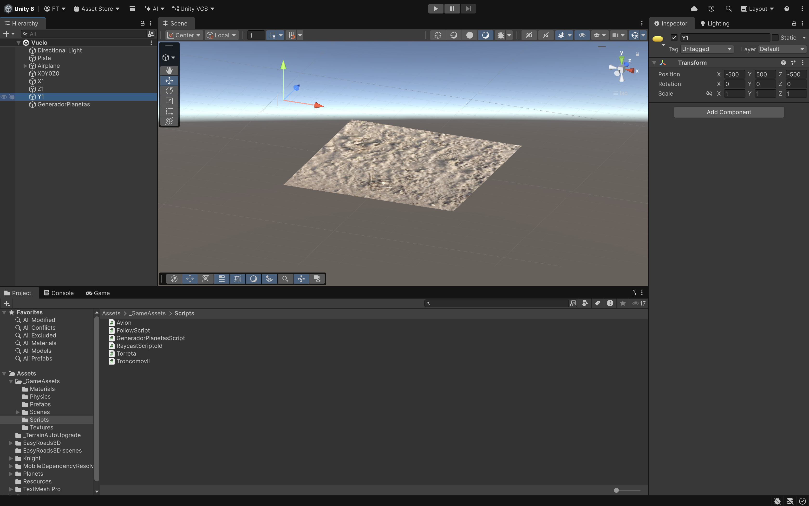
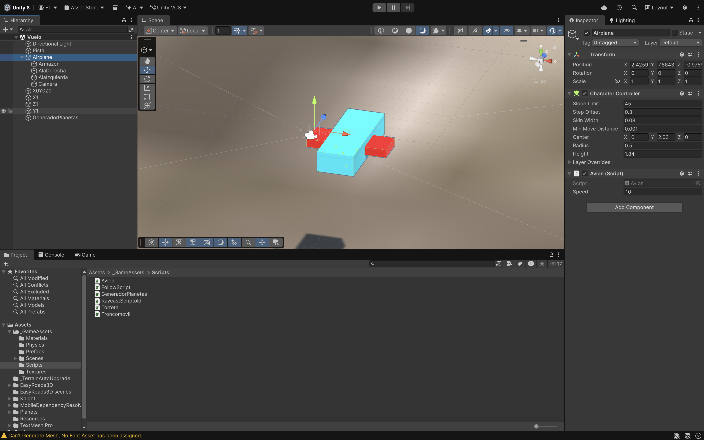
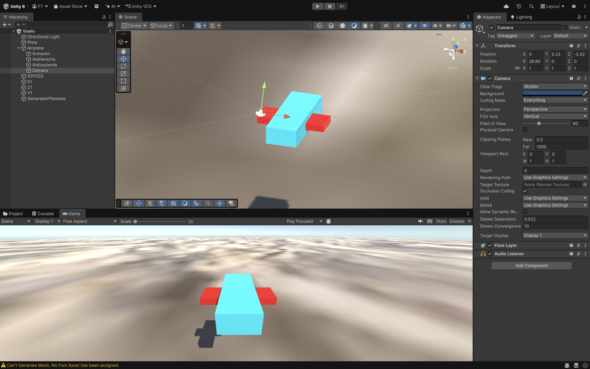
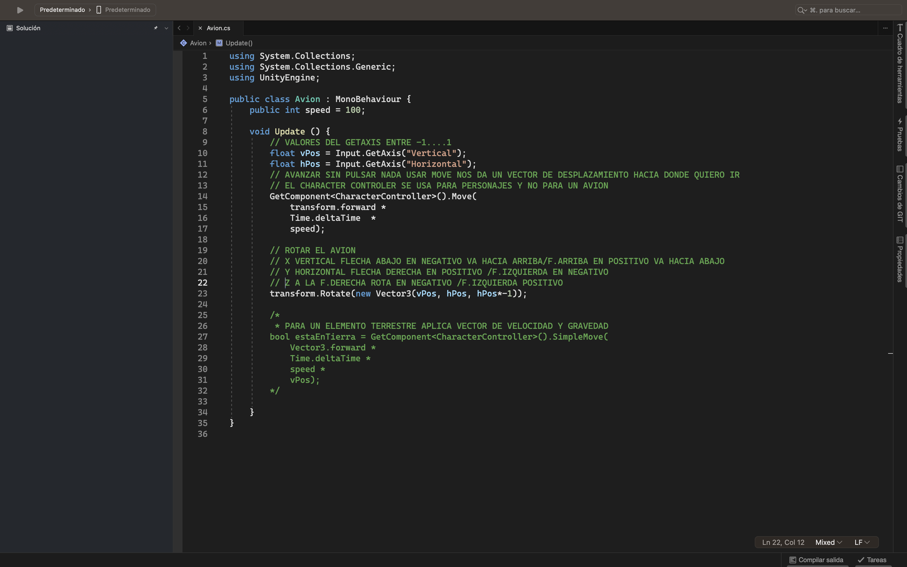
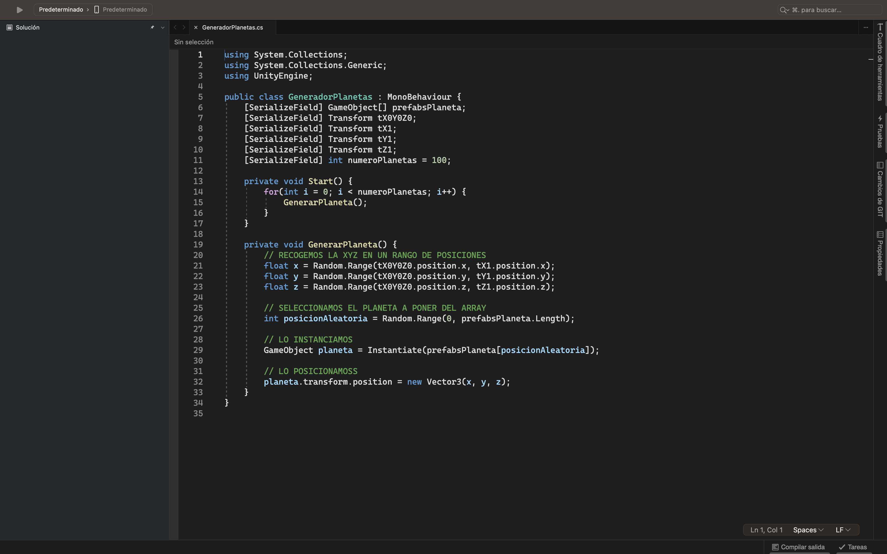
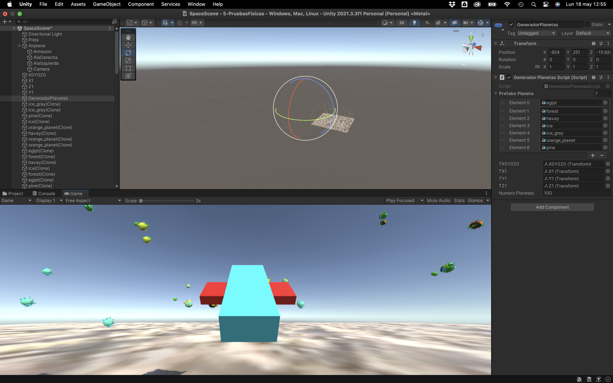

Creamos planetas en posiciones aleatorias y el avión volará sobre ellos.
Para ello necesitaremos una estructura de carpetas que tendrán el
contenido necesario para hacer el juego que lo iremos incluyendo poco a poco:
_GameAssets
• Materials.
o Todos los Objetos tienen que tener un material de color.
• Scenes.
o Vuelo.
• Scripts.
o Avion.cs.
Tendremos que crear dentro de esta escena:
• Pista (Plano). Transform Position 0,0,0. Scale 100, 1, 100
• Airplane.
• 4 GO vacío. Cada GO estará posicionado en distintas coordenadas para que los planetas tengán un
rango a la hora de crearlos.
o X0Y0Z0. Transform Position -500, 0, -500.
o X1. Transform Position 500, 0, -500.
o Z1. Transform Position -500, 0, 500.
o Y1. Transform Position -500, 500, -500.
• GeneradorPlanetas GO vacío con GeneradorPlanetas.cs.





El avión se moverá con las flechas utilizando un CharacterController:
• Flecha arriba ira bajando.
• Flecha abajo ira subiendo.
• Flecha derecha e izquierda haran los giros.
No controlaremos las colisiones del avión con los planetas.
EL Airplane será un GO vacío y tiene que mirar hacia la Z. Está formado por los siguientes componentes:
• CharacterController.
• Un Script Avion.cs (lo veremos más adelante).
Un CharacterController te permite realizar fácilmente movimientos restringidos por colisiones sin tener que
lidiar con un rigidbody.
Un CharacterController no se ve afectado por fuerzas y solo se moverá cuando llames a la función Move.

• Armazon (Cube).
• AlaDerecha (Cube).
• AlaIzquierda (Cube).
• Camera la pondremos en la parte de atrás del avión.

Necesitamos una variables speed del avión.
Método Update():
• Recoger las flechas en Vertical(vPos) y Horizontal (hPos).
• Cogemos el componente CharacterController y usando el método Move(). Ira hacia
delante * Time.deltaTime * speed.
• Rotate creando un new Vector3:
o X ira en vPos.
o Y ira en hPos.
o Z ira en hPos*-1.

Descargar de: https://assetstore.unity.com/packages/3d/poly-planets-34894.
• Variables
o GameObject[] prefabPlaneta. Pasaremos por parámetro los planetas.
o Transform tX0Z0Y0, tX1, tZ1, tY1.
o int numMaxplanetas = 100.
• Start().
• Recorrer el Array y llamar a un metodo GenerarPlaneta().
• GenerarPlaneta().
o Recogemos unas variables para saber dónde vamos a posicionar el planeta que vamos a crear.
- float x = Random.Range entre la tX0Y0Z0.position.x y tX1.position.x.
- float y = Random.Range entre la posicion y de X0Y0Z0 y la posicion y de Y1.
- float z = Random.Range entre la posicion z de X0Y0Z0 y la posicion z de Z1.
o Seleccionamos un planeta de forma aleatoria del array de planetas.
o Creamos el planeta que hemos seleccionado.
o Y lo posicionamos en las variables x,y,z.

